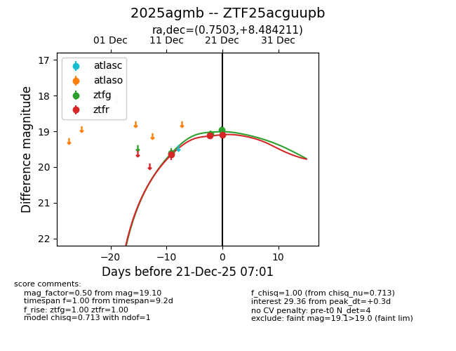
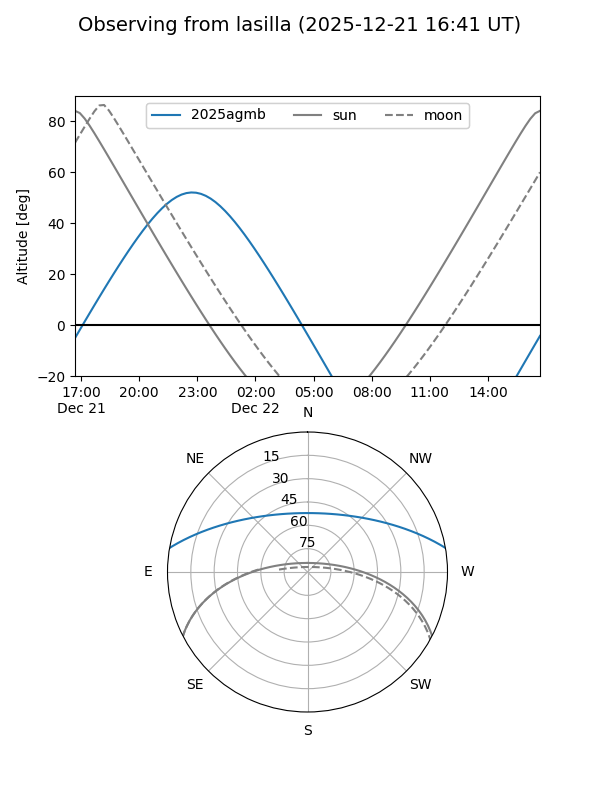
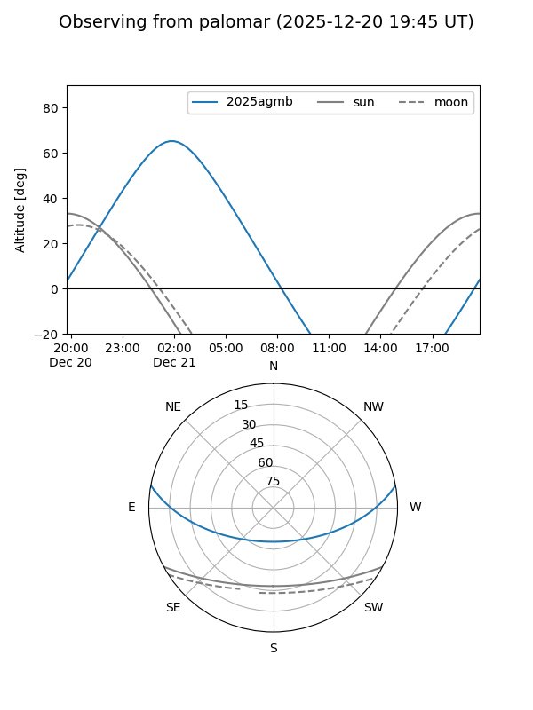
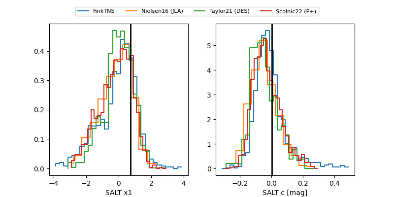

2025agmb
Target 2025agmb at 2025-12-21 20:06
Aliases and brokers:
FINK: fink-portal.org/ZTF25acguupb
Lasair: lasair-ztf.lsst.ac.uk/objects/ZTF25acguupb
ALeRCE: alerce.online/object/ZTF25acguupb
TNS: wis-tns.org/object/2025agmb
YSE: ziggy.ucolick.org/yse/transient_detail/2025agmb
alt names
ZTF25acguupb (ztf,fink_ztf)
2025agmb (tns,yse)
Coordinates:
equatorial (ra, dec) = 0.7503,+8.48421
equatorial (HMS+DMS) = 00:03:00.08,+08:29:03.16
galactic (l, b) = (103.0034,-52.50330)
Flags:
Photometry:
last ztfg=18.96, ztfr=19.10
3 ztfg, 3 ztfr detections
Lightcurve

Visibility


Additional plots
